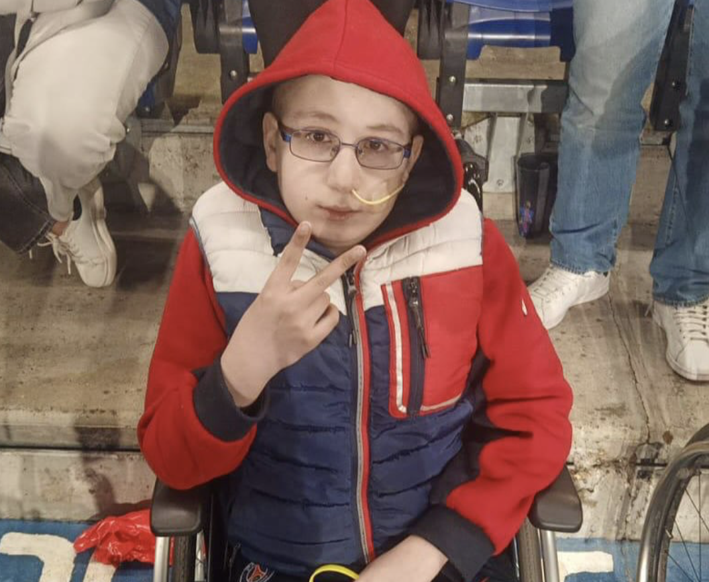
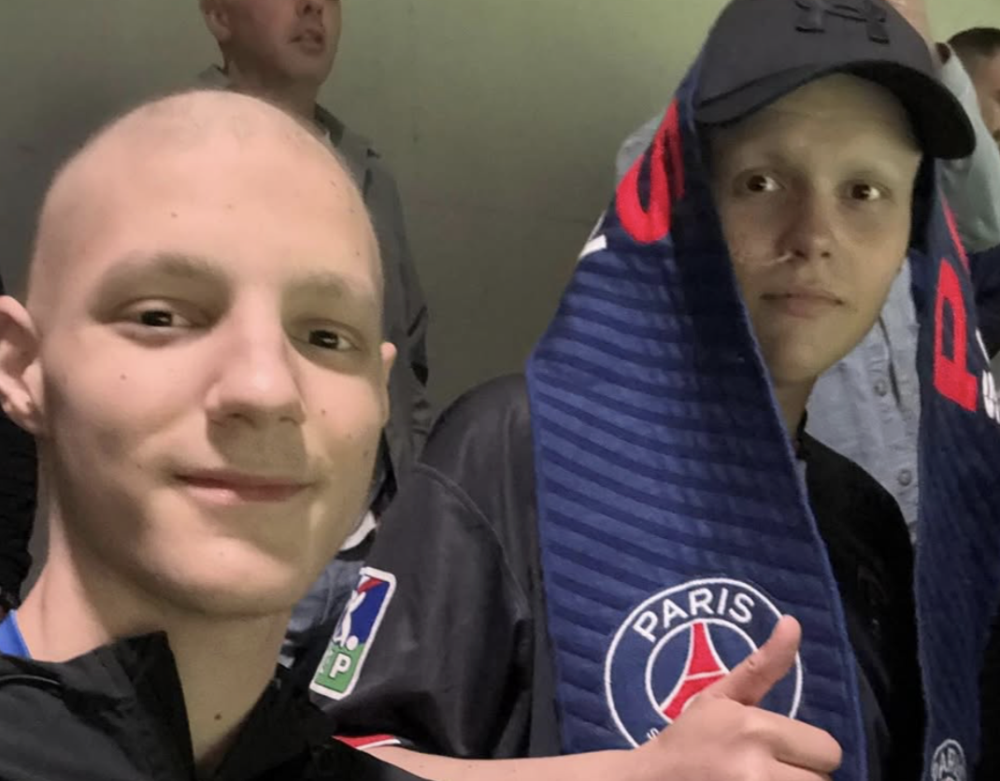
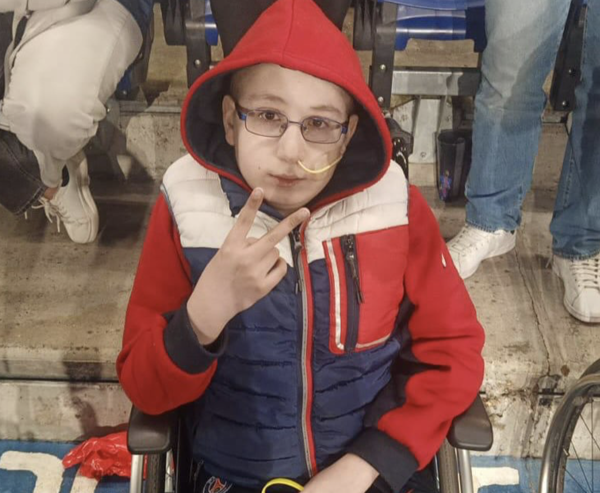
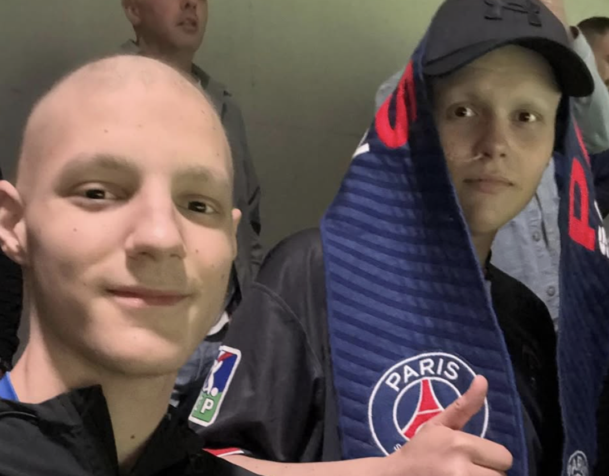
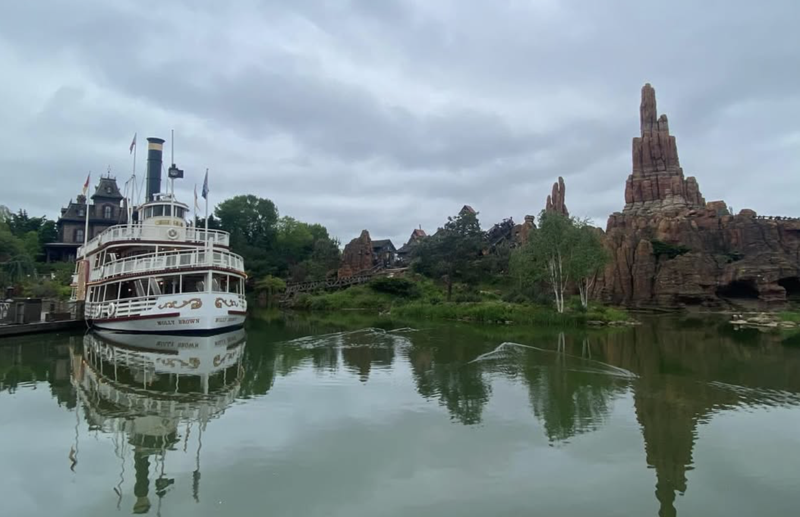
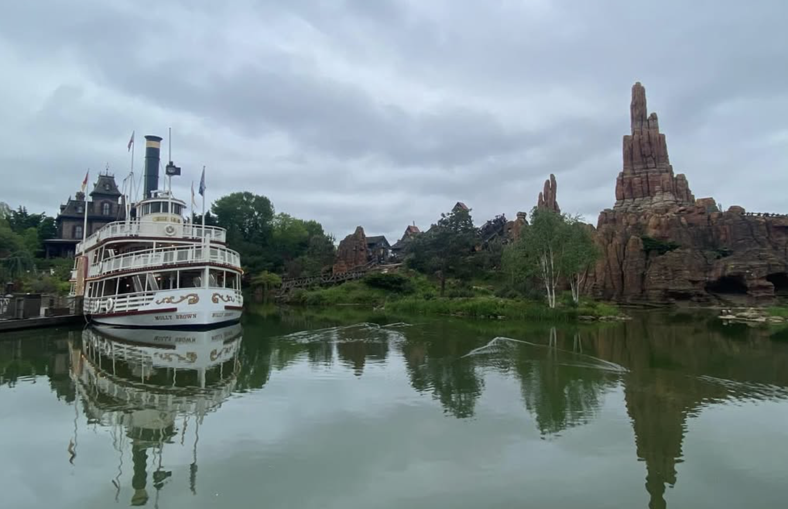

Evènements spéciaux
Découvrez nos activités collectives, pensées pour créer des souvenirs et renforcer les liens entre les jeunes accompagnés.
Ligue des Champions - PSG vs Arsenal
Le 7 mai au Parc des Princes, le PSG a signé une victoire historique 2-1 face à Arsenal en demi-finale retour de LDC, exactement comme l’avaient prédit Karim, Salim, Loan, Angelino et Samy. Dans une ambiance survoltée entre tribunes et bars, supporters et amis ont vibré à l’unisson. Une soirée mémorable qui donne déjà envie d’y croire encore pour la suite ❤️💙⚽️
 



DisneyLand
✨ Une journée magique a eu lieu quand les jeunes ont eu la chance d’aller à Disneyland Paris 🎢🏰 ! Entre attractions à sensations, parades féériques et rencontres avec leurs personnages préférés, chacun est retombé en enfance le temps d’une aventure inoubliable. Sourires, rires et étoiles dans les yeux ont rythmé cette escapade pleine d’émotions ✨🍭.

 

Finale de Ligue des champions - PSG vs Inter Milan
⚽️ Le rêve a continué au Parc des Princes pour vivre la grande finale de Ligue des Champions 2024 sur écran géant 🏆. Dans une ambiance électrique aux côtés des supporters parisiens, les jeunes ont vibré à chaque action, comme s’ils étaient dans le stade même du match. Cris, chants et frissons collectifs ont transformé cette soirée en un souvenir gravé à jamais 🔴🔵🔥.